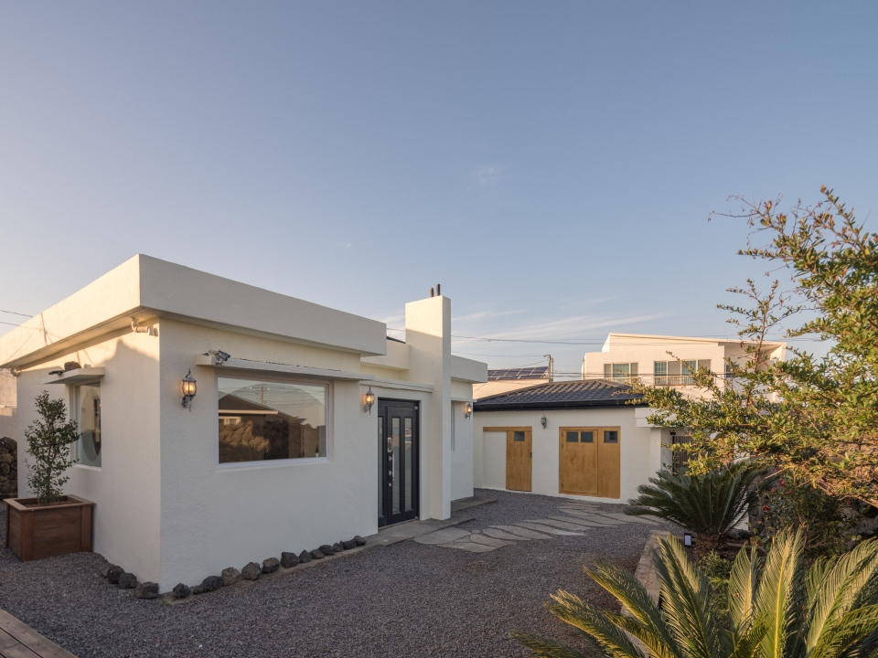

한적한 김녕 바다 마을에 위치한 둘만을 위한 프라이빗한 감성 숙소, Casita!
좋아하는 음악과 영화로 공간을 가득 채우고 바스솔트 반신욕을 하며 도시의 피로를 씻어보세요.
돌담 밖에서는 코발트 빛 바다와 아기자기한 골목 탐방도 즐길 수 있습니다.
소음
이 발생하지 않도록 주의해 주세요.출입은 불가
합니다일회용품과 쓰레기
사용을 줄이는데 협조 부탁드립니다.벌레가 출현
할 수도 있습니다.야외
에서만 부탁드립니다.상업적인 촬영
시에는 사전 협의가 필요합니다.